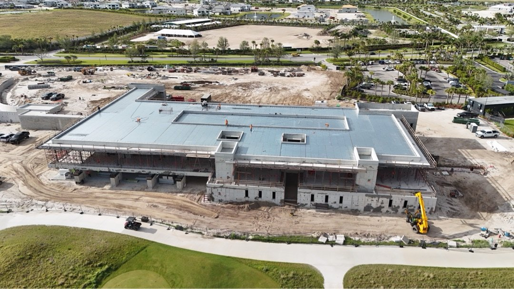
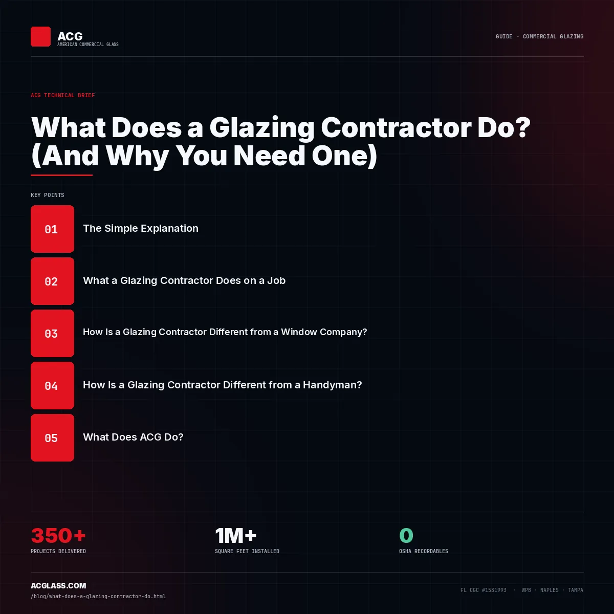

Florida’s commercial glazing contractor.
Three offices. One sub. Every opening — storefront to curtain wall — delivered on schedule for GCs building across the state, with the shop drawings, product approvals, and inspection coordination handled.
What a commercial glazing contractor does.
In commercial construction, the glazing contractor — often listed as the glazing subcontractor or Division 08 sub — is responsible for every glass and aluminum opening on the building: storefront entrances, curtain wall facades, window wall on multifamily towers, impact-rated windows and doors, fire-rated glass assemblies, automatic entrances, and interior glass partitions.
The work starts during the bid phase: reviewing the documents, identifying the specified systems, pricing the scope, and flagging specification problems before contract award. After award, the sub takes the drawings through shop-drawing production, Florida product approval verification, submittal processing, installation, and inspection.
In Florida — with wind-borne debris requirements, Miami-Dade NOA compliance in the HVHZ, and a strict product approval process — a licensed glazing contractor is a technical partner, not a labor vendor.

Every system. One sub.
ACG is the authorized installer for ESWindows and Euro-Wall, and installs and coordinates PGT, Allegion, TGP, Slimpact, and Aldora systems.
Three offices. Every Florida market.
West Palm Beach
ACG’s original office. Palm Beach, Martin, St. Lucie, and Indian River counties — Jupiter to Fort Pierce and the Treasure Coast — plus Broward and Miami-Dade HVHZ work.
Southwest FloridaNaples
Collier through Lee and Charlotte counties — Naples, Fort Myers, Cape Coral, Bonita Springs, and the Sarasota market. Delivered work includes the Cudjoe Key Fire Station and the Haines City Public Safety Complex & EOC.
Tampa BayTampa
Hillsborough, Pasco, and Pinellas counties — Downtown Tampa, Wesley Chapel, Brandon/Riverview, Clearwater, and St. Petersburg, reaching Central Florida.
Statewide coverage isn’t a marketing line — it’s an operational structure. Local crews, local supplier relationships, and local knowledge of the building departments and inspection processes that decide whether your glazing scope stays on schedule. For large projects elsewhere in the state, we deploy from the closest office.
Florida-specific. Schedule-focused.
Scheduling discipline
Submittals, procurement lead times, and installation sequences are tracked in real time — schedule risks get flagged before they become change orders. Your super gets accurate answers, not best guesses.
Florida code fluency
FBC Section 1609 wind-borne debris requirements, Miami-Dade NOA compliance in the HVHZ, and the Florida Product Approval process — navigated without hand-holding from your PM.
Complete submittal packages
Shop drawings, product approvals, NOA documentation, energy calcs, and PE-stamped anchor calculations for curtain wall — delivered complete, to pass plan review the first time.
48-hour scope response
Send plans Monday, have a detailed scope by Wednesday — specific systems, quantities, and a full Division 08 breakdown. No vague allowances, no hidden exclusions.
Glazing contractor FAQ.
Does ACG cover all of Florida?
Yes — three offices cover the full state with local crews. South Florida and the Treasure Coast from West Palm Beach, Southwest Florida from Naples, Tampa Bay and Central Florida from Tampa, across healthcare, education, retail, mixed-use, and government work.
What systems does ACG install?
The full commercial scope: storefront (ESWindows, PGT, Euro-Wall), curtain wall with PE-stamped packages, window wall, impact systems (ESWindows, Slimpact, PGT), fire-rated glass (TGP), automatic entrances (Allegion), and interior partitions. System selection follows the spec and the code — not what’s convenient to stock.
How do GCs hire a glazing contractor in Florida?
Send the construction documents and request a scope and price during the bid phase. Verify an active Florida license, real Florida Product Approval experience, PE-stamped shop-drawing capability for curtain wall, and a record of on-time submittals. ACG accepts plan sets by email at connor@acglass.com or via send-plans and returns a detailed scope within 48 hours — or call (772) 486-7711.



Building anywhere in Florida?
Send your drawings — a detailed glazing scope with system recommendations and quantities comes back in 48 hours.